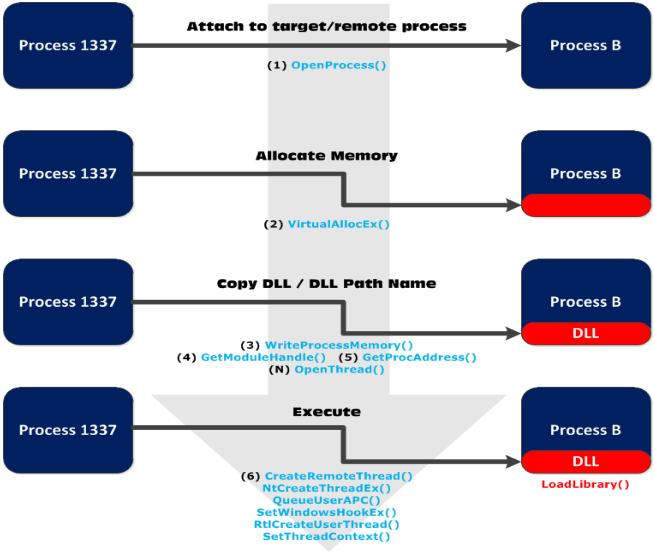

DLL Injection is the process of inserting code into a running process. The code we usuall insert is in the form of a Dynamic Link Library (DLL), since DLLs are meant to be loaded as needed at run time. This doesn't mean we cannot inject assembly in any other form. You'll ned to have an appropriate level of privileges on the system to start playing with other program's memory.
There are a couple of methods to inject DLL into a process. Latest versions of Windows enforce session separation, so some methods may not work on the newest operating systems.
Methods:- Window hooks (SetWindowsHookEX)
- CreateRemoteThread (windows xp only)
- App_Init registry key
- ZwCreateThread or NtCreateThreadEx ? Global method (works well on all versions of windows)
Via APC (Asynchronous procedure calls)
- QueueUserAPC
- SetWindowsHookEx()
- RtlCreateUserThread()
- Code cave via SetThreadContext()
Overview
Essentially, in any injection, you'll go through these steps- Attach to the process
- Allocate Memory within the process
- Copy the DLL or the DLL Path into the processes memory and determine appropriate memory addresses
- Instruct the process to Execute your DLL

DLL Proxying and DLL Hijacking
DLL injection is very much different from DLL Proxying and DLL Hijacking. People tend to confuse these. Proxying inserts a DLL into a process while its running. Hijacking tricks the program into loading it.
DLL Proxying most commonly assumes you ahve full control voer the application's install directory. The "attacker" renames the legitimate DLL and copies their own DLL into the install directory. When the application reuns, it laods the attacker's DLL (since it's named correcftly) and then the attacker's DLL relays the function calls to the legitimate one. DLL Proxying is most commonly used by the actual owner of the system as a method to extend application functionality. For instance, DLL proxying is popular in the gaming world. Lots of people use this technique to modify game functionality for cheating or other sorts of fun. "Spy" applications also leverage proxying in an attempt to capture user provided application values.
DLL Hijacking abuses Windows' DLL search order in order to compromise a system. It doesn't usually require the attacker to hav ewrite permission to the application's installation directory but rather the directory where the application was launched. In the case that the application attempts to call a non-existent DLL or if an attacker was able to place a malicious DLL in the same directory as a file that launches a vulnerable application, the attacker's DLL would be loaded and code execution would be achieved. This is because Windows [used to] search for application DLLs in the CWD from which the application was loaded before more other locations.
All techniques described here have been implemented in a small project called dllInjector.